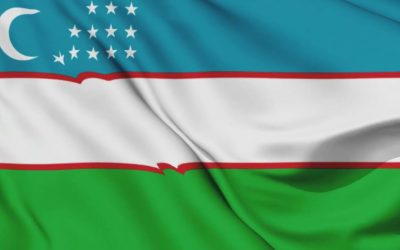
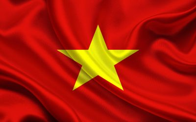

О нас
«Клуб экспортеров» Самарской области – это эффективная площадка для взаимодействия экспортеров и экспертов по экспорту для обмена опытом, мнениями и идеями по развитию экспорта и преодолению системных барьеров
Представительства и партнеры за рубежом


Наши цели
- Увеличение объемов экспорта Самарской области
- Формирование сообщества экспортоориентированных предприятий Самарской области
- Консолидация межведомственной международной повестки Самарской области;
- Создание и ведение единого электронного каталога экспортеров Самарской области
- Проведение мероприятий нацеленных на увеличение экспорта Самарской области
- Проведение мероприятий в интересах экспортеров Самарской области в т. ч. с привлечением Торговых представительств РФ за рубежом, Посольств РФ, зарубежных органов власти, зарубежных общественных объединений, отраслевых бизнес-ассоциаций
- Подписание соглашений о сотрудничестве между Клубом и зарубежными бизнес-объединениями в интересах экспортеров Самарской области и Министерства экономического развития и инвестиций Самарской области
- Взаимодействие с зарубежными СМИ для продвижения экспортоориентированных предприятий и экономических интересов Самарской области
- Систематизация вопросов экспортеров для Правительства Самарской области и содействие их решению
- Подготовка материалов для Экспортного совета Самарской области в Совете по инвестициям при Губернаторе Самарской области для выработки эффективных решений поддержки экспортеров